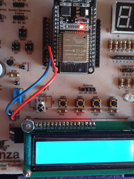

Objetivo. Ordenar alfabéticamente una lista de nombres y mostrarla de forma continua en una pantalla LCD1602. Utilizar ciclos while anidados para recorrer y mostrar los elementos de la lista.
Procedimiento.
-
Conectar el pin GPIO22 del ESP32 al pin SCL del módulo LCD1602 y el pin GPIO21 al pin SDA.


- Abrir Thonny e importar la librería lcd1602.
- Escribir el código mostrado a continuación para ordenar una lista y mostrar los nombres en ciclo.
-
Ejecutar el programa y verificar que la lista se muestre permanentemente en orden alfabético.
from lcd1602 import LCD import time # Crea una instancia de la clase LCD y le asigna la variable lcd lcd = LCD() lista = ["Juan", "Luis", "María", "Clara", "Pedro"] lista.sort() # Usa la funcion sort para ordenar la lista while True: i = 0 while i < 5: nombre = lista[i] lcd.message(nombre) time.sleep(2) lcd.clear() i = i + 1 lcd.clear() # Limpia la pantalla LCD
Actividades sugeridas.
- Cambiar los nombres por datos dinámicos obtenidos desde sensores.
- Modificar el tiempo de visualización de cada elemento de la lista.
- Invertir el orden para mostrar la lista de forma descendente.
- Guardar el programa en la carpeta local del computador.
- Guardar el programa directamente en el microcontrolador y ejecutarlo sin conexión al PC.